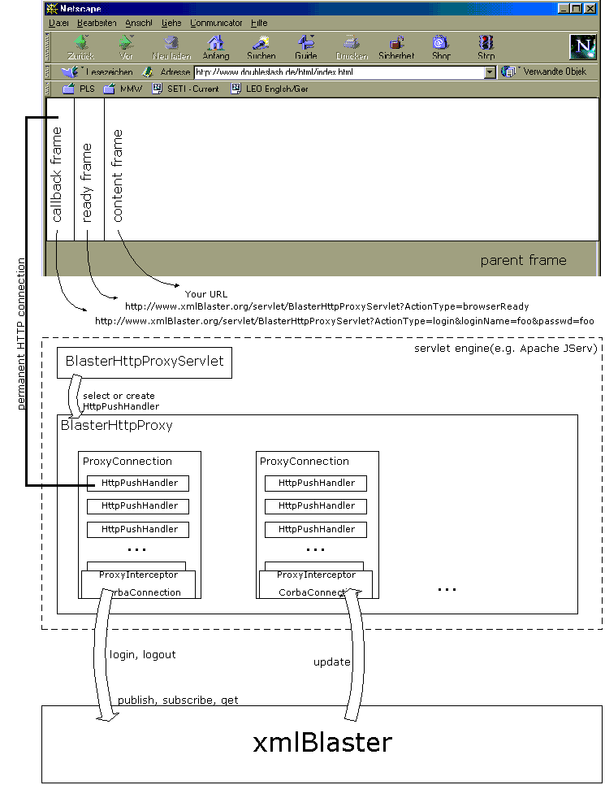

The HTTP callback framework for xmlBlaster
|
When distributing dynamic, event driven content over the internet, you usually choose
an applet. The applet connects to the server over CORBA (or any other protocol)
and may receive instant notification from the server.
This framework addresses these issues. It establishes a persistent http connection to allow instant callbacks of xmlBlaster messages to the browser. Konrad will provide a tutorial how to use this framework in near future. |
|  |
|
A callback frame in the browser refers to the BlasterHttpProxyServlet. Using the ActionType parameter set to login, the BrowserHttpProxyServlet holds the HTTP connection if login to the xmlBlaster via the BlasterHttpProxy succeeds. This permanent HTTP connection is held by the HttpPushHandler, which pings each 40 sec the browser. This functionality ensures that the browser won't close the connection. The ProxyConnection connects to xmlBlaster using CORBA . The messages from the xmlBlaster are directly (ProxyConnection.update - HttpPushHandler.update)
transferred to the browser, which has a Javascript
based XML parser and notifies the interested browser frames about the callback.
If you have too many messages in a short time frame, your browser won't process all of this
message. For this you can use an additional ready frame. Connect this frame also with
the BlasterHttpProxyServlet using ActionType=browserReady. Each reload of this frame
indicates youre permanent HTTP connection (HttpPushHandler) that your browser is ready to
process more messages. HttpPushHandler will send you the whole queue each update.
In your parent frame you have to include callback.js, util.js and xparse.js. For Servlet and Javascript examples have a look into the following directory
of the xmlBlaster distribution: xmlBlaster/src/java/org/xmlBlaster/protocol/http |